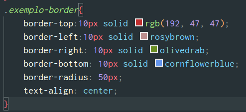
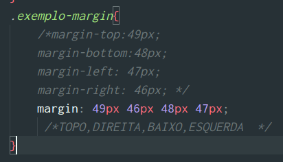

CSS Inline coloca os atributos CSS diretamente no componente que deseja alterar, mas nem sempre isso é pratico!
Ex: -body style="background-color: yellow">
-h1 style="color:blue;font-size: 50px"> Meu primeiro site com CSS
O site ficará assim colocando esses comandos inline
Antes do fechamento da tag HEAD voce irá criar uma TAG chamada STYLE que nela será inserida propriedades CSS que serão utilizadas nessa página
Ou seja, se eu colocar o H1 no style, todos os elementos H1 irão ter aquela estilização, enquanto no inline apenas a linha escolhida terá uma certa estilização
Será criado um arquivo .css que será referenciado da seguinte maneira -link rel="stylesheet" href="estilo.css"-
nele estará as informações de estilização e o mesmo pode ser chamado para diferentes páginas do mesmo projeto
Um seletor de classe é uma maneira de selecionar elementos em uma página da web com base em sua classe HTML associada.
As classes categorizam elementos utilizando um PONTO, por exemplo, essa texto terá uma class chamada CENTER (eu que escolho o nome) e no arquivo .CSS eu irei fazer com que essa classe .CENTER seja alinhada pelo text-align
Onde eu colocar essa classe o elemento escohido será regido pelos parametros dela
Principais bordas: Solid, dotted (pontinhos), dashed (tracinhos), double(dupla), groove(mais 3D),ridge, inset, outset, hidden
Responsável pelo distanciamento do elemento á esquerda,direita,topo e baixo.
